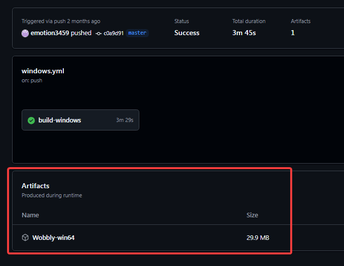

Set-up
Wobbly is a tool used for manual inverse telecine (IVTC), the process of converting telecined content back to its original framerate. It's a staple in any serious DVD encoder's toolkit, and gives you precise control over how to IVTC video.
Components
Wobbly consists of two main components:
Wibbly
The analysis component that examines the video and collects detailed metrics about:
- Field patterns
- Scene changes
- Interlaced fades
- Other relevant metrics
These metrics are stored in a JSON file for Wobbly to use.
Wobbly
The processing component that:
- Reads the JSON analysis file from Wibbly
- Determines the optimal IVTC pattern for each section
- Applies the appropriate IVTC operations and other custom filtering set by the user
- Produces the final progressive output
Limitations
Before installing and setting up Wobbly, it's important to recognise its limitations.
5-frame cycle only
Wobbly exclusively processes 5-frame telecine cycles, specifically the 3:2 pulldown pattern used in NTSC content. This means it only works with video from NTSC regions like Japan and North America1, and cannot handle PAL/SECAM sources. It cannot process variable telecine cycles that may occur when editing telecined footage directly. The software provides no support for detecting or handling alternative pulldown patterns.
Field-Based content only
Wobbly explicitly only supports field-based video, meaning the source must retain its original interlaced fields. Any video that has been deinterlaced, even if it follows a 3:2 pulldown pattern, cannot be processed correctly by Wobbly. This includes footage that has:
- Been deinterlaced using YADIF or other deinterlacing filters
- Been field blended
- Been field matched/combined
- Been converted to progressive scan
Telecined video that was field blended

The OP for Fate/EXTELLA was field blended, which combines the fields into single progressive frames. While this preserves the 3:2 pulldown pattern, the loss of distinct fields makes proper inverse telecine impossible. This type of content cannot be processed with Wobbly2.
"True" VFR
Wobbly does not support true variable framerates (VFR). Since decimation is strictly based on the telecine cycle, any VFR ranges get rounded to the nearest supported framerate. This limitation stems from Wobbly only supporting a fixed set of framerates:
- 5.994 (6) fps
- 11.988 (12) fps
- 17.982 (18) fps
- 23.976 (24) fps
- 29.97 (30) fps
Additionally, Wobbly lacks native support for outputting 59.94 (60) fps video.
Decimation breaks
During the early digital era, video editing was commonly performed on already telecined footage. This often resulted in splices that introduced extra frames, disrupting the standard telecine pattern.
When encountering these disrupted patterns, Wobbly will assign an incorrect framerate rather than attempting to fix the cycle. This differs from YATTA's behavior, which would automatically detect such issues and apply appropriate decimation.
While we cover manual fixes in the "Fixing the Framerate" section, this represents a regression from YATTA's automated handling. Future versions of Wobbly may address this limitation.
Interlaced content
As mentioned in the "True" VFR section, Wobbly does not currently support 60p output. This means that interlaced content requiring deinterlacing cannot be processed directly through Wobbly. However, you can work around this limitation by:
- Marking interlaced scenes as 30p and setting "CCCCC" matches
- Deinterlacing the video in your own filterchain after Wobbly processing
- Manually regenerating timecodes to account for the doubled framerate
Alternatively, if you want to use Wobbly's timecodes output functionality, you'll need to pull down 60i content to 30p first. This will make sure the content matches one of Wobbly's supported framerates.
Installation
We recommend installing the JET fork of Wobbly. This fork contains various improvements and bugfixes over the original.
- Download the latest
Wobbly-win64.zipfrom the releases page - Extract the ZIP file to a location of your choice
- The executable can be run directly without any additional setup
Artifact Expiry
GitHub Actions artifacts are only available for 90 days after creation. If you cannot download an artifact, it may have expired. In this case, use the latest stable release instead.
If you need the latest features or fixes not yet in a stable release:
- Visit the GitHub Actions page (requires a GitHub account)
- Click on the most recent successful workflow run
- Download the "Wobbly-win64" artifact from the Artifacts section
- Extract and use like the stable release
Finding the Artifact

Dependencies
Wobbly requires several VapourSynth plugins to function properly:
| Required | Optional |
|---|---|
| DMetrics | bestsource |
| FieldHint | L-SMASH-Works |
| SCXVID | d2vsource |
| TDeintMod | DGDecNV |
| vivtc |
Verifying plugin installation
To check if Wobbly can find all required plugins:
- Open Wobbly
- Click Tools > Check plugins
- A window will appear showing the status of each plugin
Plugin status window

Wibbly
Setting up Wibbly
This section is incomplete!
This section is a stub. You can help us by expanding it.
How can I help?
- Writing Wibbly preperation steps
- Adding the python version (via vspreview?) instructions
Wibbly is used for metrics gathering and preparing a WOB file. There are two implementations.
...
This section is incomplete!
This section is a stub. You can help us by expanding it.
How can I help?
- Writing the actual wibbly python module
- Documenting basic usage here
Setting up Wobbly
This section is incomplete!
This section is a stub. You can help us by expanding it.
How can I help?
- Writing Wibbly preperation steps
- Adding the python version (via vspreview?) instructions
-
See this wikipedia page for more information. ↩
-
While Wobbly is not designed to fix field blending issues directly, it can be used to identify and scenefilter sections of field-blended content through its custom list functionality. ↩